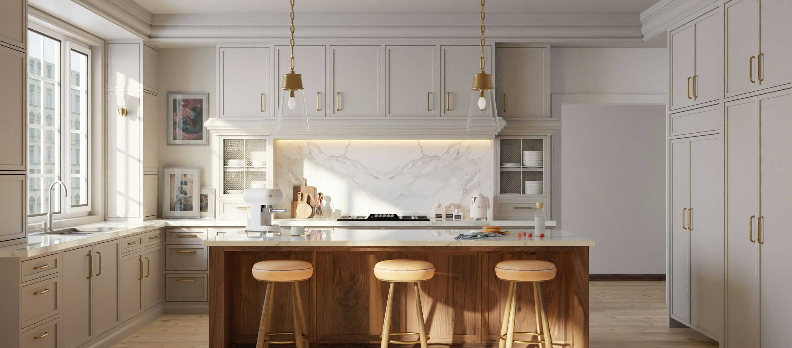
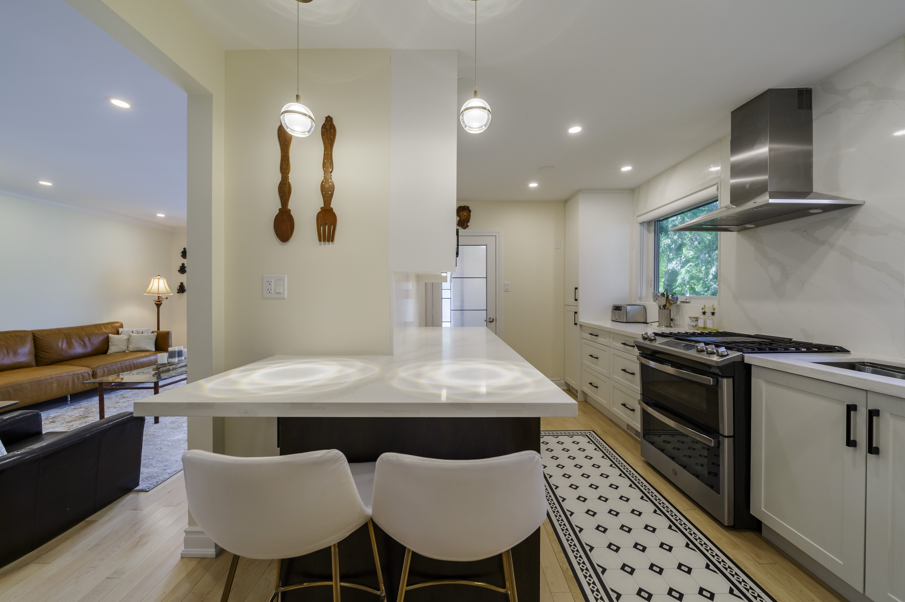

Kitchen Styles & Inspiration
Browse kitchens by what you notice first.
Use the filters to narrow the visual field by form, tone, or material. Nothing is saved and no label commits you to a collection. Open any kitchen to study it at full scale, then bring the useful parts into your own room.
Discuss your direction
A visual starting point
See modern, framed, light, dark, and wood kitchens in one place.
A filter can help you see a pattern. Your room, architecture, light, routines, and budget will decide how that direction becomes specific.
12 kitchens shown
 Traditional KitchensFramed cabinetry and familiar architectural detail adapted to the home.
Contemporary KitchensClean cabinetry, warmer materials, and open-room connections.
Traditional KitchensFramed cabinetry and familiar architectural detail adapted to the home.
Contemporary KitchensClean cabinetry, warmer materials, and open-room connections.

See completed projectsLook at how each direction changes with architecture, light, and proportion.No style name required
Bring the images you saved and tell us what you keep noticing.
We will translate the useful signals into a direction that works in your room.